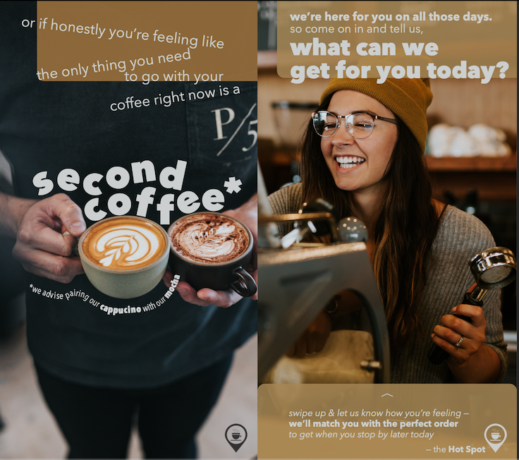
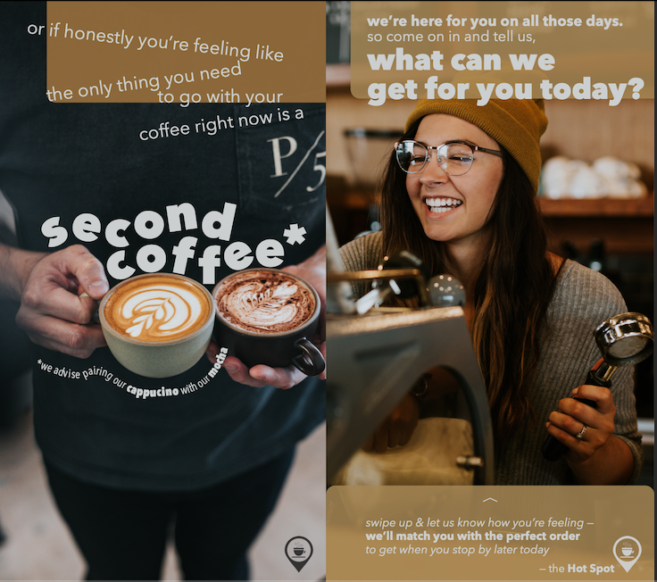

hi there.
i’m Lynn Priestley.
digital narrative and interactive design student

digital narrative and interactive design student
—
I am a junior at the University of Pittsburgh, majoring in Digital Narrative and Interactive Design on the Online Media track. My education involves a hybrid focus between the writing and design skills that go into creating digital content, as well as the coding and data analysis skills to build the software that can display said content. Check out some of my main interests below.
My biggest passion is making my work accessible. I have sought out supplemental disability-related design readings and tools, like WebAIM’s contrast checker and WAVE Web Accessibility Evaluation Tool, that allow me to check if my projects are inclusive to the disability community.
My skillset currently includes Photoshop, Illustrator, InDesign, and Audacity. Outside of application based skills, I have formal training in typographic principles. But I’m always looking to expand.
From both a creative writing and a computer programming standpoint, I really enjoy writing in every stage from outlining to editing. Specifically with coding, I “speak” HTML, CSS, Python, and Java.
—
I often use GitHub repositories to track my progress with projects or to host final project files and comments. Feel free to click on the links below the images to explore my repositories and find screenshots, research notes, and asset credits.
In addition to my portfolio pieces, I also coded this wesbite from scratch. You can find the link to my repository to see how it evolved here.
 



—
let’s get in touch.